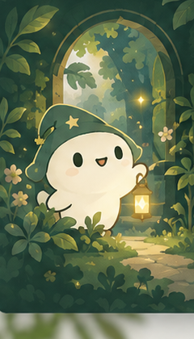

質問と回答を、いつもそばに。
ゲーム中も結果画面でも、質問番号・メモ・回答・質問した人の履歴を表示。検索、回答別の絞り込み、表示順の切り替えもできます。
音声は録音・文字起こししません。質問文も残したいときは、短いメモを入力してね。
出題するのも、推理するのも、人間。
質問するほど、謎がほどける。
「それ、いい質問！」をみんなで残そう。
本番と同じ画面のまま、一周できます。仲間と遊ぶ →

前の質問、何て答えたっけ？
候補を絞った、あの一問は？
必要なときに、いつでも見返せるように。
ゲーム中も結果画面でも、質問番号・メモ・回答・質問した人の履歴を表示。検索、回答別の絞り込み、表示順の切り替えもできます。
音声は録音・文字起こししません。質問文も残したいときは、短いメモを入力してね。
いい切り口を見つけたら、履歴からFinePlay。質問数は卓全体のスコア、名質問への合図は別の表彰です。
他の人の質問に1人1票。自分の質問には付けられません。「終了後に発表」も選べます。
誰かが部屋を作成し、ゲーム内の招待URLをDiscordへ。仲間は名前を入れるだけ。
出題者は答えを1つ決めて手元に。質問者が質問ボタンを押し、Discordで話そう。
質問数と名質問を振り返る。結果はDiscord用にコピーでき、出題者も交代できます。
v0.4は、役割・人・今の操作番をメンバーのアイコンにまとめ、質問カードに質問者とQ番号を重ね、FinePlayの手を「その回答のそば」に置きました。履歴は一覧のまま質問と回答が読め、質問者とFP印が行に乗ります。役割別のひとりお試しを追加し、トップのイラストは好みの原画から切り出した実寸の素材に差し替えています。
実際のフレンド同士の接続、異なる端末・回線での通しプレイと復帰は検証中です。ひとり体験が動くことと、オンライン対戦の接続確認は分けて扱っています。
どちらも今回のリリースには含めていません。まじんは案内役で、回答するのは人間です。回答画像の自動生成は将来の拡張候補です。
文章を選択してコピーし、いつものDiscordへ。ここから自動投稿はしません。